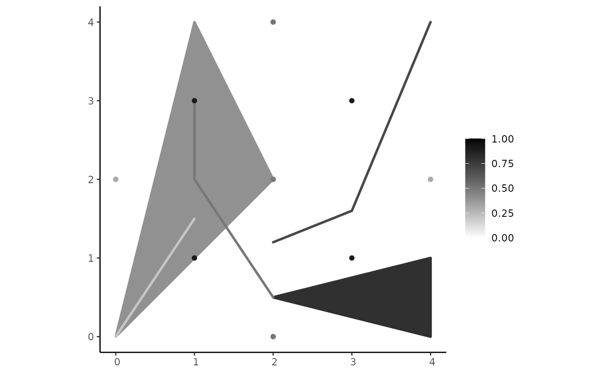
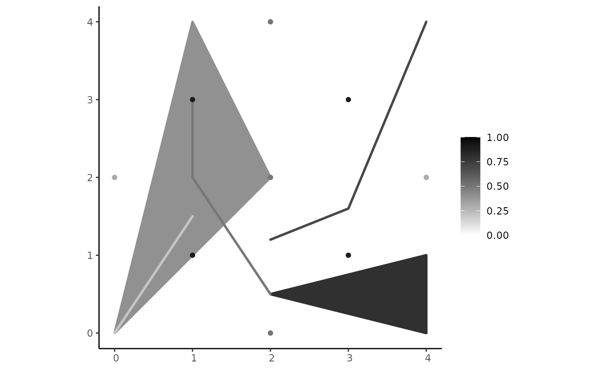

This function plots a pgeometry object.
Usage
# S4 method for pgeometry,missing
plot(x, y, ...)
fsr_plot(pgo, base_poly = NULL, add_base_poly = TRUE,
low = "white", high = "black", crs = NA, ...)Arguments
- x
A
pgeometryobject of any type.- y
Not applicable.
- ...
<
dynamic-dots> Optional parameters. They can be the same as the parameters ofgeom_sffunction.- pgo
A
pgeometryobject of any type.- base_poly
An
sfgobject of the typePOLYGONorMULTIPOLYGON. It can also be ansfcobject with only one element of the typePOLYGONorMULTIPOLYGON.- add_base_poly
A Boolean value that indicates whether
base_polywill added to the visualization.- low
A character value that indicates the color for the lower
mds limit value (0). Default is"white".- high
A character value that indicates the color for the higher
mds limit value (1). Default is"black".- crs
A numerical value that denotes the coordinate reference system (i.e., EPSG code) of the visualization. Default is
NA.
Details
The fsr_plot uses a ggplot method to construct the plot. It receives a pgeometry object (if it is empty, an empty graphics
in obtained).
The low and high parameters are the colors for the minimum and maximum limits of the membership degrees. The
default colors are "white" and "black", respectively. Other colors can be given in the same way that colors are informed
to visualizations produced by the ggplot package.
It is possible to clip the geometric format of the components by using the parameter base_poly. The boundaries of this object
can also be included in the visualization if the parameter add_base_poly is TRUE.
Examples
library(sf)
### Example 1
# Creating components for the plateau point object
v1 <- rbind(c(1,2), c(3,4))
v2 <- rbind(c(1,4), c(2,3),c(4,4))
md1 <- 0.2
md2 <- 0.1
md3 <- 0.4
pts1 <- rbind(c(1, 2), c(3, 2))
pts2 <- rbind(c(1, 1), c(2, 3), c(2, 1))
pts3 <- rbind(c(2, 2), c(3, 3))
comp1 <- component_from_sfg(st_multipoint(pts1), md1)
comp2 <- component_from_sfg(st_multipoint(pts2), md2)
comp3 <- component_from_sfg(st_multipoint(pts3), md3)
# Creating the plateau point object as a pgeometry object with 3 components
ppoint <- create_pgeometry(list(comp1, comp2, comp3), "PLATEAUPOINT")
fsr_plot(ppoint) # with default colors
 fsr_plot(ppoint, low="blue",high = "red") # with custom limit colors
# Example 2 - PLATEAULINE PLOT
lpts1 <- rbind(c(0, 0), c(1, 1))
lpts2 <- rbind(c(1, 1), c(1.2, 1.9), c(2, 1))
lpts3 <- rbind(c(2, 1), c(1.5, 0.5))
comp4 <- component_from_sfg(st_linestring(lpts1), 0.4)
comp5 <- component_from_sfg(st_linestring(lpts2), 1)
comp6 <- component_from_sfg(st_linestring(lpts3), 0.7)
pline <- create_pgeometry(list(comp4, comp5, comp6), "PLATEAULINE")
fsr_plot(pline) # Default values
fsr_plot(ppoint, low="blue",high = "red") # with custom limit colors
# Example 2 - PLATEAULINE PLOT
lpts1 <- rbind(c(0, 0), c(1, 1))
lpts2 <- rbind(c(1, 1), c(1.2, 1.9), c(2, 1))
lpts3 <- rbind(c(2, 1), c(1.5, 0.5))
comp4 <- component_from_sfg(st_linestring(lpts1), 0.4)
comp5 <- component_from_sfg(st_linestring(lpts2), 1)
comp6 <- component_from_sfg(st_linestring(lpts3), 0.7)
pline <- create_pgeometry(list(comp4, comp5, comp6), "PLATEAULINE")
fsr_plot(pline) # Default values
 fsr_plot(pline, low="green", high="blue") # Custom colors ...
fsr_plot(pline, low="green", high="blue") # Custom colors ...
 # Example 3 - PLATEAUREGION PLOT
p1 <- rbind(c(0,0), c(1,0), c(3,2), c(2,4), c(1,4), c(0,0))
p2 <- rbind(c(1,1), c(1,2), c(2,2), c(1,1))
pol1 <-st_polygon(list(p1,p2))
p3 <- rbind(c(3,0), c(4,0), c(4,1), c(3,1), c(3,0))
p4 <- rbind(c(3.3,0.3), c(3.8,0.3), c(3.8,0.8), c(3.3,0.8), c(3.3,0.3))[5:1,]
pol2 <- st_polygon(list(p3,p4))
pol3 <- st_polygon(list(rbind(c(3,3), c(4,2), c(4,3), c(3,3))))
comp1 <- component_from_sfg(pol1, 0.2)
comp2 <- component_from_sfg(pol2, 0.4)
comp3 <- component_from_sfg(pol3, 0.7)
pregion <- create_pgeometry(list(comp1, comp2, comp3), "PLATEAUREGION")
fsr_plot(pregion)

fsr_plot(pregion, low = "blue", high = "red")
# Example 3 - PLATEAUREGION PLOT
p1 <- rbind(c(0,0), c(1,0), c(3,2), c(2,4), c(1,4), c(0,0))
p2 <- rbind(c(1,1), c(1,2), c(2,2), c(1,1))
pol1 <-st_polygon(list(p1,p2))
p3 <- rbind(c(3,0), c(4,0), c(4,1), c(3,1), c(3,0))
p4 <- rbind(c(3.3,0.3), c(3.8,0.3), c(3.8,0.8), c(3.3,0.8), c(3.3,0.3))[5:1,]
pol2 <- st_polygon(list(p3,p4))
pol3 <- st_polygon(list(rbind(c(3,3), c(4,2), c(4,3), c(3,3))))
comp1 <- component_from_sfg(pol1, 0.2)
comp2 <- component_from_sfg(pol2, 0.4)
comp3 <- component_from_sfg(pol3, 0.7)
pregion <- create_pgeometry(list(comp1, comp2, comp3), "PLATEAUREGION")
fsr_plot(pregion)

fsr_plot(pregion, low = "blue", high = "red")